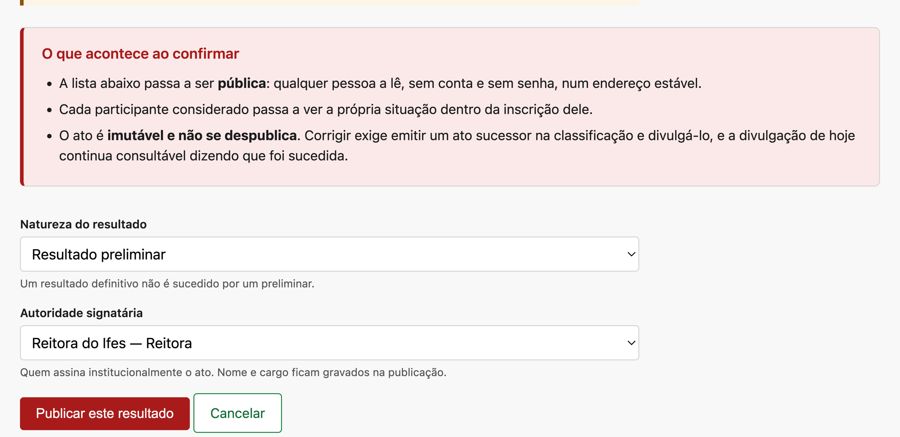
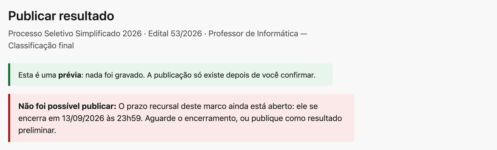
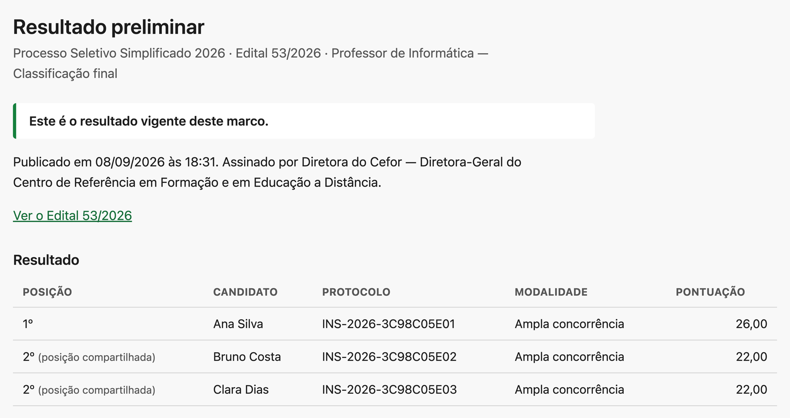
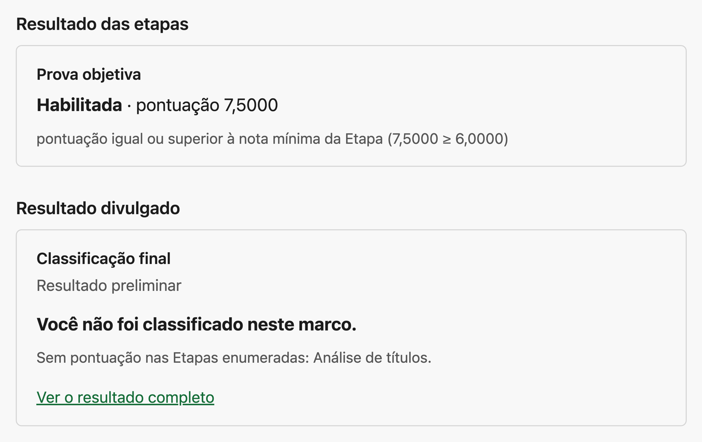
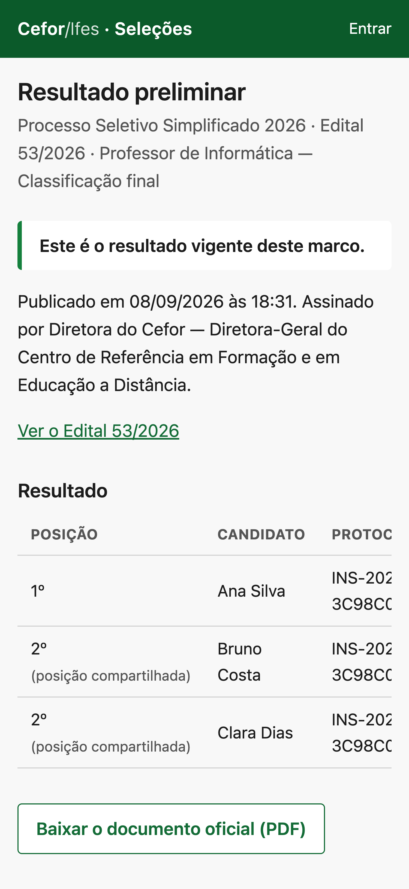

Quem faz isto
Paula, publicadora. Não é Paulo, que preside a comissão e emitiu o ato de classificação: emitir a ordem e divulgá-la são autorizações distintas. O sistema permite que a mesma pessoa faça as duas — não há checagem de identidade aqui —, mas a separação é a regra de trabalho, e numa equipe pequena ela tem consequência: quem publica um resultado fica impedido de julgar os recursos contra aquela publicação (C-04).
Quando fazer
Depois que o ato de classificação estiver emitido e vigente (C-17). Se o ato ficou obsoleto porque a base mudou, não o divulgue: emita antes o ato sucessor.
Preliminar ou definitivo — decida antes de abrir a prévia
São duas naturezas com efeitos diferentes, e a escolha não se corrige depois. Preliminar é o resultado que ainda admite recurso; é o que se publica quando o prazo recursal declarado no Edital vai abrir ou está aberto. Definitivo é o resultado final, e o sistema só o aceita quando nenhum dos cinco impedimentos existe: recurso pendente, reingresso pendente, reavaliação pendente, providência pendente, ou janela recursal ainda aberta.
Publicar
-
Abra o ato de classificação vigente e clique em Publicar resultado.
Abre a prévia. Nada foi gravado ainda — a própria tela diz isso na primeira linha.
-
Leia O que acontece ao confirmar e confira a lista em O que será divulgado.

① As três consequências, escritas pelo próprio sistema — a terceira é a que importa: o ato é imutável e não se despublica. ② A natureza. ③ A autoridade signatária: nome e cargo ficam gravados na publicação. A lista abaixo do formulário é exatamente o que o público vai ler. Se ela estiver errada, o problema está no ato de classificação, não aqui.
-
Escolha a Natureza do resultado e a Autoridade signatária.
Nenhuma das duas tem valor por omissão: as duas são declaração, e ficam gravadas.
-
Clique em Publicar este resultado.
A publicação passa a existir num endereço público e estável, com PDF próprio.
Sem retorno
Publicar este resultado não tem desfazer e não tem despublicar. Corrigir um resultado divulgado exige emitir um ato sucessor na classificação e divulgá-lo por cima (C-20). A publicação de hoje continua consultável no mesmo endereço, dizendo que foi sucedida.
Quando a confirmação é recusada
Duas recusas aparecem aqui, e nenhuma delas é defeito.
A prévia envelheceu. Se alguma coisa mudou entre você abrir a prévia e clicar em confirmar — o ato foi sucedido, alguém publicou antes de você —, a confirmação é recusada. Ela protege você de publicar uma lista que já não é a atual. Abra a prévia de novo, releia e confirme.
A definitiva está impedida. Se você escolheu Resultado definitivo e algum dos cinco impedimentos existe, a tela recusa e diz qual é — com a data, quando for prazo.

Por trás disto
A prévia carrega uma assinatura do estado que ela mostrou. Na confirmação o sistema compara essa assinatura com o estado atual, e recusa se não baterem. É por isso que a recusa por envelhecimento não tem contorno nem "confirmar mesmo assim": o ponto dela é justamente que você não confirme o que não leu.
Onde o resultado aparece depois
O que muda depois
Uma publicação aparece em três lugares, e é útil saber os três porque as pessoas vão perguntar por todos:
- a página pública do resultado, num endereço estável, sem conta e sem senha, com o documento oficial em PDF;
- a área do candidato, onde cada participante considerado passa a ver a própria situação — inclusive quem não recebeu posição;
- o histórico de publicações do marco, na gestão, onde as publicações anteriores continuam legíveis, marcadas como sucedidas.

Atenção
A divulgação é passiva: nenhum candidato é notificado. Publicar não dispara mensagem nenhuma — quem não abrir a página não fica sabendo. Se a instituição precisa comunicar ativamente, o aviso sai por outro canal, com o endereço da página pública. Vale a pena combinar isso antes de publicar, não depois.
A lista pública nomeia menos gente do que o ato considerou
Só quem recebeu posição aparece na lista pública. Quem foi considerado pelo ato e ficou sem posição — porque não tem pontuação em alguma Etapa enumerada pelo marco, por exemplo — não é nomeado publicamente, e vê a própria situação, com o motivo escrito, dentro da inscrição dele.

Por trás disto
O Resultado de Etapa não é público em lugar nenhum. O candidato vê o dele dentro da própria inscrição; o público vê apenas o ato de classificação divulgado. Se a instituição precisa publicar um resultado intermediário de Etapa, isso hoje se faz fora do sistema.
No celular

Dica
O endereço da página pública é estável e não muda quando o resultado é sucedido. Divulgue esse endereço, e não o PDF: quem abrir o endereço depois de uma republicação vê o resultado vigente, ou o aviso de que aquela publicação foi sucedida.
Você terminou quando…
…a página pública abre num navegador sem sessão, mostra a natureza correta no título, e o documento oficial baixa. Confira também uma inscrição sem posição: se ela mostra a situação e o motivo, a divulgação está completa.